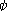
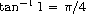
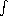
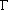
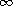
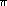

Recursion (including iteration) combines well with Scheme's mathematical primitive procedures to implement various numerical techniques. As an example, let's implement Simpson's rule, a procedure for finding an approximation for a definite integral.
The definite integral of a function f(x) within an interval of integration [a,b] can be viewed as the area under the curve representing f(x) from the lower limit x = a to the upper limit x = b. In other words, we consider the graph of the curve for f(x) on the x,y-plane, and find the area enclosed between that curve, the x-axis, and the ordinates of f(x) at x = a and x = b.
According to Simpson's rule, we divide the interval of integration [a,b] into n evenly spaced intervals, where n is even. (The larger n is, the better the approximation.) The interval boundaries constitute n + 1 points on the x-axis, viz, x0, x1, …, xi, xi+1, …, xn, where x0 = a and xn = b. The length of each interval is h = (b − a)/n, so each xi = a + ih. We then calculate the ordinates of f(x) at the interval boundaries. There are n + 1 such ordinates, viz, y0, …, yi, …, yn, where yi = f(xi) = f(a + ih). Simpson's rule approximates the definite integral of f(x) between a and b with the value1:
We define
the procedure integrate‑simpson
to take four arguments: the integrand f; the
x-values at the limits a and b; and the
number of intervals n.
(define integrate-simpson (lambda (f a b n) ;...
The first thing we do in
integrate‑simpson's body is ensure that
n is even --- if it isn't, we simply bump its
value by 1.
;... (unless (even? n) (set! n (+ n 1))) ;...
Next, we put in the local variable h
the length of the interval. We introduce two more local variables
h*2 and n/2 to store the values of twice h
and half n respectively, as we expect to
use these values often in the ensuing calculations.
;... (let* ((h (/ (- b a) n)) (h*2 (* h 2)) (n/2 (/ n 2)) ;...
We note that the sums y1 + y3 + ⋯ + yn−1
and y2 + y4 + ⋯ + yn−2 both involve adding
every other ordinate. So let's define a local procedure
sum‑every‑other‑ordinate‑starting‑from that
captures this common iteration. By abstracting this
iteration into a procedure, we avoid having to repeat
the iteration textually. This not only reduces
clutter, but reduces the chance of error, since we have
only one textual occurrence of the iteration to debug.
sum‑every‑other‑ordinate‑starting‑from takes two arguments:
the starting ordinate and the number of ordinates to be summed.
;... (sum-every-other-ordinate-starting-from (lambda (x0 num-ordinates) (let loop ((x x0) (i 0) (r 0)) (if (>= i num-ordinates) r (loop (+ x h*2) (+ i 1) (+ r (f x))))))) ;...
We can now calculate the three ordinate sums, and combine them to produce the final answer. Note that there are n/2 terms in y1 + y3 + ⋯ + yn−1, and (n/2) − 1 terms in y2 + y4 + ⋯ + yn−2.
;... (y0+yn (+ (f a) (f b))) (y1+y3+...+y.n-1 (sum-every-other-ordinate-starting-from (+ a h) n/2)) (y2+y4+...+y.n-2 (sum-every-other-ordinate-starting-from (+ a h*2) (- n/2 1)))) (* 1/3 h (+ y0+yn (* 4.0 y1+y3+...+y.n-1) (* 2.0 y2+y4+...+y.n-2))))))
Let's use integrate‑simpson to find the definite
integral of the function
We first define  in Scheme's prefix notation.2
(define *pi* (* 4 (atan 1))) (define phi (lambda (x) (* (/ 1 (sqrt (* 2 *pi*))) (exp (- (* 1/2 (* x x)))))))
Note that we exploit the fact that  in order to define *pi*.3
The following calls calculate the definite integrals of
phi from 0 to 1, 2, and 3 respectively. They
all use 10 intervals.
(integrate-simpson phi 0 1 10) (integrate-simpson phi 0 2 10) (integrate-simpson phi 0 3 10)
To four decimal places, these values should be 0.3413, 0.4772, and 0.4987 respectively [2, Table 26.1]. Check to see that our implementation of Simpson's rule does indeed produce comparable values!4
It is not always convenient to specify the number n
of intervals. A number that is good enough for
one integrand may be woefully inadequate for another. In
such cases, it is better to specify the amount of
tolerance e we are willing to grant the final answer, and let
the program figure out how many intervals are needed. A
typical way to accomplish this is to have the program
try increasingly better answers by steadily increasing
n, and stop when two successive sums differ within
e. Thus:
(define integrate-adaptive-simpson-first-try (lambda (f a b e) (let loop ((n 4) (iprev (integrate-simpson f a b 2))) (let ((icurr (integrate-simpson f a b n))) (if (<= (abs (- icurr iprev)) e) icurr (loop (+ n 2)))))))
Here we calculate successive Simpson integrals (using
our original procedure integrate‑simpson) for
n = 2, 4, …. (Remember that n must be even.)
When the integral icurr for the current n
differs within e from the integral iprev for
the immediately preceding n, we return icurr.
One problem with this approach is that we don't take into account that only some segments of the function benefit from the addition of intervals. For the other segments, the addition of intervals merely increases the computation without contributing to a better overall answer. For an improved adaptation, we could split the integral into adjacent segments, and improve each segment separately.
(define integrate-adaptive-simpson-second-try (lambda (f a b e) (let integrate-segment ((a a) (b b) (e e)) (let ((i2 (integrate-simpson f a b 2)) (i4 (integrate-simpson f a b 4))) (if (<= (abs (- i2 i4)) e) i4 (let ((c (/ (+ a b) 2)) (e (/ e 2))) (+ (integrate-segment a c e) (integrate-segment c b e))))))))
The initial segment is from a to b. To find
the integral for a segment, we calculate the Simpson
integrals i2 and i4 with the two smallest
interval numbers 2 and 4. If these are within e of
each other, we return i4. If not we split the
segment in half, recursively calculate the integral
separately for each segment, and add. In
general, different segments at the same level converge
at their own pace. Note that when we integrate a half
of a segment, we take care to also halve the tolerance,
so that the precision of the eventual sum does not
decay.
There are still some inefficiencies in this
procedure: The integral i4 recalculates three
ordinates already determined by i2, and the integral
of each half-segment recalculates three ordinates
already determined by i2 and i4. We avoid
these inefficiencies by making explicit the sums used
for i2 and i4, and by transmitting more parameters
in the named-let integrate‑segment. This makes for
more sharing, both within the body of integrate‑segment
and across successive calls to integrate‑segment:
(define integrate-adaptive-simpson (lambda (f a b e) (let* ((h (/ (- b a) 4)) (mid.a.b (+ a (* 2 h)))) (let integrate-segment ((x0 a) (x2 mid.a.b) (x4 b) (y0 (f a)) (y2 (f mid.a.b)) (y4 (f b)) (h h) (e e)) (let* ((x1 (+ x0 h)) (x3 (+ x2 h)) (y1 (f x1)) (y3 (f x3)) (i2 (* 2/3 h (+ y0 y4 (* 4.0 y2)))) (i4 (* 1/3 h (+ y0 y4 (* 4.0 (+ y1 y3)) (* 2.0 y2))))) (if (<= (abs (- i2 i4)) e) i4 (let ((h (/ h 2)) (e (/ e 2))) (+ (integrate-segment x0 x1 x2 y0 y1 y2 h e) (integrate-segment x2 x3 x4 y2 y3 y4 h e)))))))))
integrate‑segment now explicitly sets four
intervals of size h, giving five ordinates y0,
y1, y2, y3, and y4. The integral
i4 uses all of these ordinates, while the integral
i2 uses just y0, y2, and y4, with an
interval size of twice h. It is easy to verify that
the explicit sums used for i2 and i4 do correspond
to Simpson sums.
Compare the following approximations of 020 ex dx:
(integrate-simpson exp 0 20 10) (integrate-simpson exp 0 20 20) (integrate-simpson exp 0 20 40) (integrate-adaptive-simpson exp 0 20 .001) (- (exp 20) 1)
The last one is the analytically correct answer. See
if you can figure out the smallest n (overshooting is
expensive!)
such that (integrate‑simpson exp 0 20 n) yields a result
comparable to that returned by the integrate‑adaptive‑simpson
call.
Simpson's rule cannot be directly applied to improper integrals (integrals such that either the value of the integrand is unbounded somewhere within the interval of integration, or the interval of integration is itself unbounded). However, the rule can still be applied for a part of the integral, with the remaining being approximated by other means. For example, consider the  function. For n > 0, (n) is defined as the following integral with unbounded upper limit:
From this, it follows that (a) (1) = 1, and (b) for n > 0, (n + 1) = n(n). This implies that if we know the value of in the interval (1, 2), we can find (n) for any real n > 0. Indeed, if we relax the condition n > 0, we can use result (b) to extend the domain of (n) to include n ≤ 0, with the understanding that the function will diverge for integer n ≤ 0.5
We first implement a Scheme procedure gamma‑1‑to‑2
that requires its argument n to be within the
interval (1, 2). gamma‑1‑to‑2 takes a
second argument e for the tolerance.
(define gamma-1-to-2 (lambda (n e) (unless (< 1 n 2) (error 'gamma-1-to-2 "argument outside (1, 2)")) ;...
We introduce a local variable gamma‑integrand to hold
the -integrand g(x) = xn−1ex:
;... (let ((gamma-integrand (let ((n-1 (- n 1))) (lambda (x) (* (expt x n-1) (exp (- x)))))) ;...
We now need to integrate g(x) from 0 to . Clearly we cannot deal with an infinite number of intervals; we therefore use Simpson's rule for only a portion of the interval [0, ), say [0, xc] (c for ``cut-off''). For the remaining, ``tail'', interval [xc, ), we use a tail-integrand t(x) that reasonably approximates g(x), but has the advantage of being more tractable to analytic solution. Indeed, it is easy to see that for sufficiently large xc, we can replace g(x) by an exponential decay function t(x) = yc e−(x − xc ), where yc = g(xc). Thus:
The first integral can be solved using Simpson's rule,
and the second integral is just yc. To find xc,
we start with a low-ball value (say 4), and then refine
it by successively doubling it until the ordinate at
2xc (ie, g(2xc)) is within a certain
tolerance of the ordinate predicted by the tail-integrand
(ie, t(2xc)). For both the Simpson
integral and the tail-integrand calculation, we will
require a tolerance of e/100, an order of 2 less than
the given tolerance e, so the overall
tolerance is not affected:
;... (e/100 (/ e 100))) (let loop ((xc 4) (yc (gamma-integrand 4))) (let* ((tail-integrand (lambda (x) (* yc (exp (- (- x xc)))))) (x1 (* 2 xc)) (y1 (gamma-integrand x1)) (y1-estimated (tail-integrand x1))) (if (<= (abs (- y1 y1-estimated)) e/100) (+ (integrate-adaptive-simpson gamma-integrand 0 xc e/100) yc) (loop x1 y1)))))))
We can now write a more general procedure gamma
that returns (n) for any real n:
(define gamma (lambda (n e) (cond ((< n 1) (/ (gamma (+ n 1) e) n)) ((= n 1) 1) ((< 1 n 2) (gamma-1-to-2 n e)) (else (let ((n-1 (- n 1))) (* n-1 (gamma n-1 e)))))))
Let us now calculate (3/2).
(gamma 3/2 .001) (* 1/2 (sqrt *pi*))
The second value is the analytically correct answer.
(This is because (3/2) =
(1/2)(1/2), and (1/2) is known to be
1/2.)
You can modify gamma's second
argument (the tolerance) to get as close an
approximation as you desire.
1 Consult any elementary text on the calculus for an explanation of why this approximation is reasonable.
2 is the probability density of a random variable with a normal or Gaussian distribution, with mean = 0 and standard deviation = 1. The definite integral 0z (x) dx is the probability that the random variable assumes a value between 0 and z. However, you don't need to know all this in order to understand the example!
3 If Scheme didn't
have the atan procedure, we could use our
numerical-integration procedure to get an approximation
for 01 (1 + x2)−1 dx, which is /4.
4 By pulling constant factors --- such as (/
1 (sqrt (* 2 *pi*))) in phi --- out of the
integrand, we could speed up the ordinate calculations
within integrate‑simpson.
5 (n) for real n > 0 is itself an extension of the ``decrement-then-factorial'' function that maps integer n > 0 to (n−1)!.